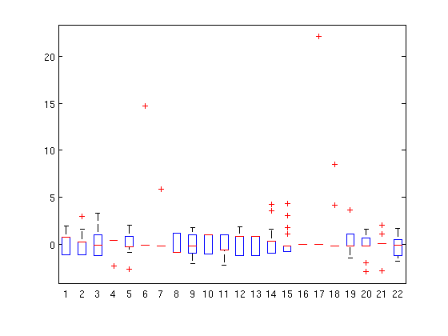

Anomaly Detection
Introduction
Anomalies are outliers in data. In statistics, such outliers are called discordant observations. They could represent numerous different events. The degree to which an item is an anamoly is usually determined by an outlier score, which is a number produced by a distance metric that determines how far away the point is from the "normal" data. Therefore, throughout this section I will mention how a specfic approach calculates an outlier score. This is the metric used to determine whether or not a data point is anamalous.
Outliers may be the result of errors in data collection, or might be natural anamolies, representing a freak occurance. For example, maybe you did actually interview a 9-foot person while collecting data for a weight-loss study, or maybe the person conducting the study wrote their 6 upside down. Because errors during data collection is such a common cause for anamolies, one of the best steps to prevent them is to implement policies or checks that can catch them during the data collection stage. Unfortunately, as mentioned in an earlier section, you do not often get to collect your own data, and often the data you're mining was collected for another purpose. Regardless of it's source, the reality of data mining is that data sets will commonly contain anomalies, and it is the job of the miner to detect them. There are a few different ways to do this, and in this section I will talk about statistical approaches, clustering-based approaches, denisty-based approaches, and finally proximity-based approaches.
Anamolies are detected for many reasons. In some cases, such as network intrusion detection, the anomalies are the goal of the mining algorithm. In this case, data mining is used to find irregular activity on the network, whether it be an unusual load from a certain location, or acess from an odd or foriegn ip address. These unusual, or rare, cases are in fact anomalies. Another instance where anomalies are a good thing is with e-commerce or market-basket data. In these cases, an anomaly might represent an unusual amount of money spent by a particular customer. This could indicate a very good customer that you would want to detect in order to cater to his needs and make sure you maintain his business. In most cases, however, anomalies are bad because they can throw off calculations. For example, in K-Means clustering, they can pull the centroid of a cluster away from where it should actually be. Therefore, they usually want to be discovered so they can be removed from the dataset in order to obtain more accurate results. Regardless of the goal of anomaly detection, the following approaches are all useful means for discovering them.
Statistical Anomaly Detection
The statistical approaches to anomaly detection work well on data with a Guassian distirbution. They are primarily focused on discovering how far data points fall from the mean of the data, and uses an outlier score of how many standard deviations away from the mean that a point is in a data set. As a result, before conducting this type of anomaly detection, it is important to first identify the statistical distribution of the data set. If it is not a Guassian distribution, but instead has a distirbution with a higher probability of points falling further from the mean, the approach I outline below will not as effective.
Guassian, or normal, distribution forms a bell curve when graphed. It is defined by the following equation, where $\sigma$ is the standard deviation of the data set, $\sigma^{2}$ is the variance, $\mu$ is the mean or expected value, and $e$ is euler's number.
When $\mu = 0$ and $\sigma^2 = 1$, the distribution is called standard normal. Below is a graph showing the resulting bell curve from a few different distributions, including the standard normal in red.

As can be seen in the graph, in a Guassian distribution, most points are around the same area, and that is the area under the bell. In a normal distribution the bell is in the middle of the data, while in a skewed distirbution (such as the green line), the bell may be off to one side or the other. In either case, most of the data points are found around the center of the bell. The distance a point is away from the center of the bell can be determined by it's standard deviation. The center of the bell is $\mu$, which represents the mean of the data. This is also called the expected value, since it is the average of the data. Think of a game, with a maximum score of 5. If a player scored a 2 on the first round and 4 on the second round, and you were asked to guess how well they would do on the third round, how would you do it? What would the expected score be? The easiest way to approach this problem is to take the average of the player's previous scores, and predict he will score a 3 on the next round. This is why it is called the expected value. The amount a data point deviates from this expected value is called standard deviation, and is represented by a $\sigma$. Below is a graph that illustrates a standard normal distribution split by how many standard deviations the data points in each section of the curve are away from the mean.

As you can see, about 68% of all the data points are within one standard deviation from the mean. About 95% of the data points are withing two standard deviations from the mean. Fnally, over 99% of the data is within three standard deviations from the mean. Statistically based anomaly detection uses this knowledge to discover outliers. A dataset can be standarized by taking the z-score of each point. A z-score is a measure of how many standard deviations a data point is away from the mean of the data. Any datapoint that has a z-score higher than 3 is an outlier, and likely to be an anomaly. As the z-score increases above 3, points become more obviously anomalous. A z-score is calculated using the following equation.
Once z-scores are calculated, they can be graphed so that anomalies can more easily be seen. I used a statistical approach to discover anaomalies in the famous mushroom data set. I first divided the data up into two sets, edible mushrooms and poisonous mushrooms. I then found the z-scores for each attribute in each record, and graphed them using a box-plot graph. A box-plot is perfect for this application because it can be thought of as looking top down on a bell-curve where the box represents the bell, and items marked with a red "x" are numerous standard deviations away and therefore anomalous. The x-axis represents the attribute, and the y-axis is the number of standard deviations away from the mean, which is of course 0 standard deviations away from itself.
Edible Mushroom Anomalies

Poisonous Mushroom Anomalies
In the graph for the poisonous mushrooms, attributes 6, 7, 17, and 18 all have data points that are more than 5 standard deviations away from the mean. While all of these are likely to be anamolies, the most noticeable are attributes 6 and 17, with clearly anamolous points at 15 and 20 standard deviations away from mean, respectively. Statistical anomaly detection is a quick and effective means to detect anamolies, and can be easily visualized in graphs like the one above.
Clustering-Based Anomaly Detection
The most common form of clustering-based anomaly detection is done with prototype-based clustering. Prototype based clustering is when items are a member of a cluster because they most closely match the prototype of that closer, or match that prototype better than any other. A good example of this is k-means clustering, where each cluster has a centroid that represents it's prototype. Using this approach to anomaly detection, a point is classified as an anomaly if its omission from the group significantly improves the prototype, then the point is classified as an anomaly. This logically makes sense. K-means is a clustering algorithm that clusters similar points. The points in any cluster are similar to the centroid of that cluster, hence why they are members of that cluster. If one point in the cluster is so far from the centroid that it pulls the centroid away from it's natural center, than that point is literally an outlier, since it lies outside the natural bounds for the cluster. Hence, its omission is a logical step to improve the accuracy of the rest of the cluster. Using this approache, the outerlier score is defined as the degree to which a point doesn't belong to any cluster, or the distance it is from the centroid of the cluster. In K-means, the degree to which the removal of a point would increase the accuracy of the centroid is the difference in the SSE, or standard squared error, or the cluster with and without the point. If there is a substantial improvement in SSE after the removal of the point, that correlates to a high outlier score for that point.
More specifically, when using a k-means clustering approach towards anomaly detection, the outlier score is calculated in one of two ways. The simpilest is the point's distance from its closest centroid. However, this approach is not as useful when there are clusters of differing densities. To tackle that problem, the point's relative distance to it's closest centroid is used, where relative distance is defined as the ratio of the point's distance drom the centroid to the median distance of all points in the cluster from the centroid. This approach to anomaly detection is sensitive to the value of k. Also, if the data is highly noisy, then that will throw off the accuracy of the initial clusters, which will descrease the accuracy of this type of anomaly detection. The time complexity of this approach is obviously dependent on the choice of clustering algorithm, but since most clustering algorithms have linear or close to linear time and space complexity, this type of anomaly detection can be high efficient
Density-Based Anomaly Detection
There are two approaches to density-based anomaly detection. One is to use an outlier socre for a density-based outlier. This score is the inverse of the density around the object, which is usually provided by the average distance the point is away from it's $k$ nearest neighbors. The second approach is to use an outlier score equal to the number of points within a given radius from the initial point. This count in calculated using the DBSCAN algorithm.
The first strategy uses a $k$-nearest neighbor approach to calculate the outlier score. The density around an object is the inverse of the average of the distance from the point to each of it's $k$-nearest neighbors. Therefore, if the distance between a point and it's neighbors is small, the density will be high. This approach to calculating density is defined by the following equation, where $N(x,k)$ is the set of $k$-nearest neighbors of $x$, $|N(x,k)|$ is the size of that set, and $y$ is a nearest neighor.
The second strategy uses a DBSCAN approach to determine how many points are within a certain radius from the initial point. A value $d$ is specified as the radius to search within, and this is equivilent to the $\epsilon$ passed to DBSCAN. The density around the point is the number of points that are $d$ or less distance away. As a result, this approach is very sensitive to the value set for $d$. If $d$ is too small, than normal points, in a group of normal density, will have a misleadingly low density and be labled as outliers. On the other hand, if $d$ is too large, than many outliers will have outlier scores similar to normal points.
Either of the above approaches only works in data sets with a consist density. If the data contains multiple areas of differing densities, then the density measure must be modified to be relative to the neighborhood of a data point. One way to do this is to find the average relative density of a data point, which can be calculated using the following equation.
A common approach to density-based anamoly detection using average relative density is to first calculate the density of a point it it's neighborhood, consisting of $k$ neighbors, and then also calculating the of the neighbors as well. The average of the neighbor points' densities is used to determine the average relative density of the initial point. Using this approach, it can be determined whether or not the initial point, $x$, is in a more or less dense region, so the outlier score can be adjusted accordingly. Density-based approaches to anomaly detection tend to take $O(m^2)$ time, where $m$ is the number of objects. For low-dimensional data, this can be reduced to $O(m\log m)$ through the use of specialized data structures.
Proximity-Based Anomaly Detection
Proximity based anomaly detection is based on the $k$-nearest neighbor algorithm discussed in the classification section. The outlier score in proximity-based anomaly detection is the distance the point is from it's $k$th-nearest neigbor. The algorithm work by finding the neighborhood that each point is in. This neighboorhood consits of the $k$ closest data points to it in the set. The distance between each neighbor is measured. The distance to the $k$th-closest neighbor, which would be the furthest point away in the $k$-sized neighborhood, becomes the outlier score for the initial point. This process is repeated for every data point in the set.
This approach is easier than statistical approaches since it is a lot easier to determine a proximity metric, or $k$, than it is to determine the distribution of a dataset. A weakness of this approach, however, is that it is very sensitive to the value set for k. If $k$ is too low, than outliers will be hidden as long as there are at least one or two other outliers close enough for them. This would be a problem for noisy data sets. On the other hand, setting $k$ too large than all the points in a small cluster could be labeled as outliers. Finally, proximity-based anamoly detection may not be best for very large datasets. Because it has to measure the distance from every data point to every other data point, most approaches take around $O(m^2)$ time, where $m$ is the number of objects. This can become too expensive for large datasets.